Team collaboration
Team feature enables multiple users to work on the same Workato account and collaborate on recipes in a shared workspace. User roles and permission sets can be assigned to ensure that different users have access to the features they need.
Team feature is enabled only for certain plans. Check the Pricing and Plans page or reach out to Workato sales representatives at +1 (844) 469-6752 to find out more.
Team owner permissions
For Workato accounts with team access, team owners are able to view the team option on their account menu.
 Team feature menu option
Team feature menu option
In the team admin screen, team owners can view current collaborators on their team, view pending invitations to collaborators, as well as invite collaborators. Collaborator roles can also be changed by the team owner.
 View collaborators, pending invites to collaborators, and invite collaborators
View collaborators, pending invites to collaborators, and invite collaborators
Team roles
Each collaborator you invite to a team will have a role. Roles define the permissions a user has when logged into the team account, such as the ability to access particular folders, or the ability to create, edit, delete recipe assets.
The default roles for teams are:
- Admin
- Analyst
- Operator
The following table details the specific set of permissions each role has.
 Access rights comparison
Access rights comparison
Admin role
Admins have almost equivalent permissions as the team owner. They are able to add, edit and delete recipes, connections, SDK, API keys and on-prem agents. In addition, admins have administrative rights over the team and are able to invite collaborators or edit collaborators' roles.
The admin role is typically given to users managing the Workato team account.
Analyst role
Analysts have no access to team administration nor API keys. They are able to add and edit recipes, connections, SDK, as well as start and stop the on-prem agents.
The analyst role is typically given to users building and testing integration recipes or custom connectors on Workato.
Operator role
Operators only have access to view recipes and jobs, as well as start and stop recipes and rerun jobs.
The operator role is typically given to users maintaining the recipe and ensuring the recipes are running well.
Custom roles
In addition to the default team roles, you can also define custom roles. These allow you to assign fine-grained permission sets to collaborators. You can create new roles on the team page.
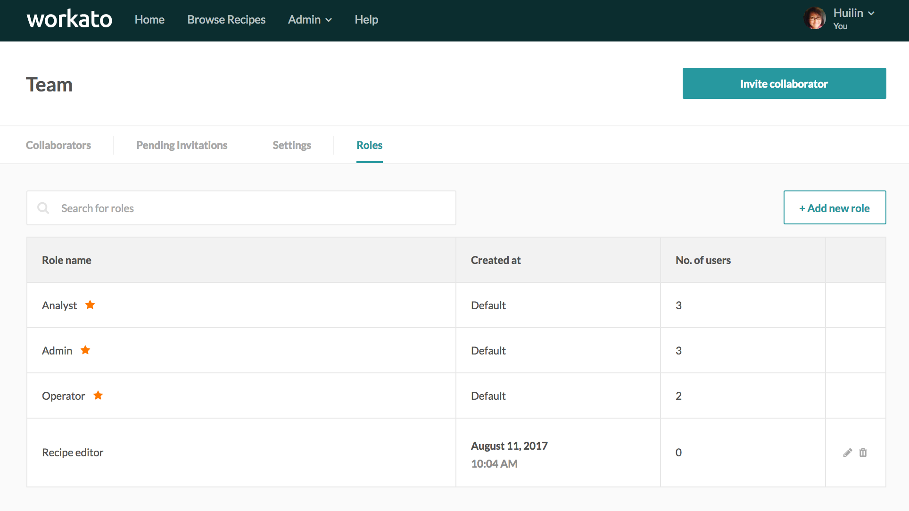 Manage your roles and create new roles in the roles tab within the Team feature
When creating a new role, select the specific create, edit and delete rights for recipe assets. In addition, select the additional Workato features within the team account you would like the collaborators to have access to.
 Additional role access to Workato features
Additional role access to Workato features
You can also define the folders, and correspondingly the recipes and connections contained in that folder, that the role will have access to. This is useful when there are multiple teams working on the same Workato account, such as development, QA and production teams in the recipe development lifecycle, or when different departments in the company wishes to manage their recipes separately. Users assigned to those folders will not have access to other folders nor to the Home folder.
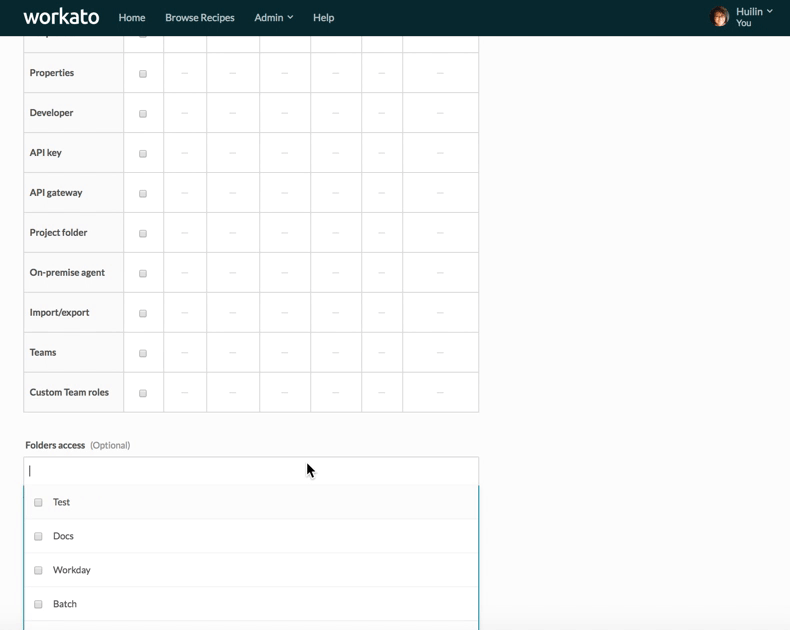 Define folder permissions for the new role
Invite collaborators
To invite collaborators, provide the full name of the collaborator and their email.
 Invite collaborators to the team
Invite collaborators to the team
Existing Workato users will be prompted to login to Workato and accept the team invite.
Non-Workato users will be prompted to sign up for a Workato account.
Switching between personal accounts and team accounts
Team members will be able to view the teams they are collaborating on in their account menu, as well as their roles in the team. Members can toggle to these teams by clicking on the team.
 Switching to the ACME team account
Switching to the ACME team account
Audit logs
Recipe changes are logged under Versions tab and attributed to the collaborator who made the change. Older versions of the recipe can be restored by users with admin or analyst roles.
 Recipe audit log in Versions tab
Recipe audit log in Versions tab
Okta Single Sign-On
Follow the steps below to enable Okta SSO for your team.
Create SAML application
Create a new SAML application in Okta admin interface. Refer to the Okta documentation for more details.
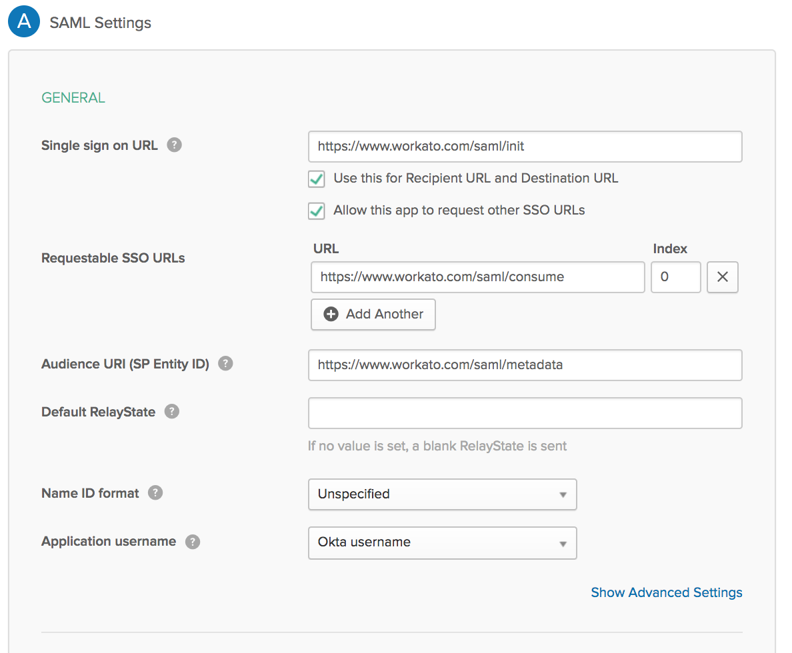 Okta Workato Service Provider settings in Wizard mode
Fill the settings form as follows:
| Field | Value |
|---|---|
| Single Sign On URL | https://www.workato.com/saml/init |
| Allow this app to request other SSO URLs | Enable checkmark |
| Requestable SSO URLs | Add https://www.workato.com/saml/consume |
| Audience Restriction | Add https://www.workato.com/saml/metadata |
| Recipient URL | Add https://www.workato.com/saml/init |
| Destination URL | Add https://www.workato.com/saml/init |
The final Okta settings screen should look like this: 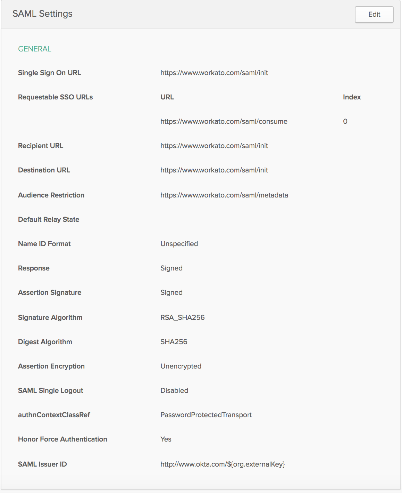 Okta Workato Service Provider completed settings
Obtain Okta metadata URL for Workato SAML setup
Go to the "Sign On" tab and in yellow field you would see link "Identity Provider Metadata". Copy this URL to use in future in Workato Team Settings SAML configuration 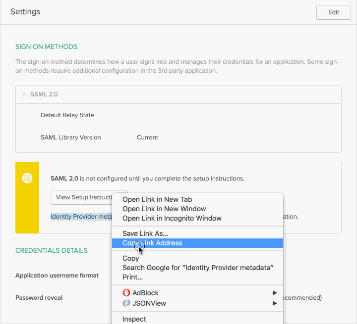 Okta metadata URL
OneLogin Single Sign-On
Follow the steps below to enable OneLogin SSO for your team.
Create SAML application
Create a new SAML application in OneLogin admin interface. Refer to the OneLogin documentation for more details.
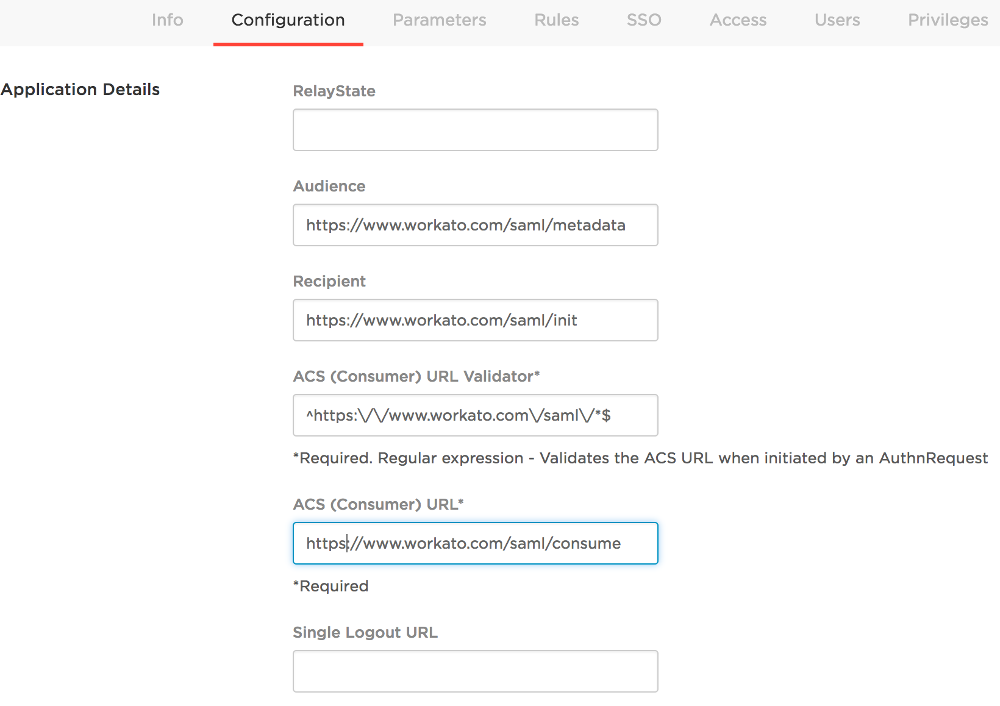 OneLogin Workato Service Provider settings
Fill the settings form as follows:
| Field | Value |
|---|---|
| Audience | https://www.workato.com/saml/metadata |
| Recipient | https://www.workato.com/saml/init |
| ACS (Consumer) URL validator | ^https:\/\/www.workato.com\/saml\/*$ |
| ACS (Consumer) URL | https://www.workato.com/saml/consume |
Obtain OneLogin metadata URL for Workato SAML setup
- Once OneLogin setup finished press on "Save" button in the top right corner of OneLogin SAML settings page.
- Click on the menu "More Actions", right click on "SAML metadata" and choose "Copy Link Address" in context menu.
- Copy this URL to use in future in Workato Team Settings SAML configuration.
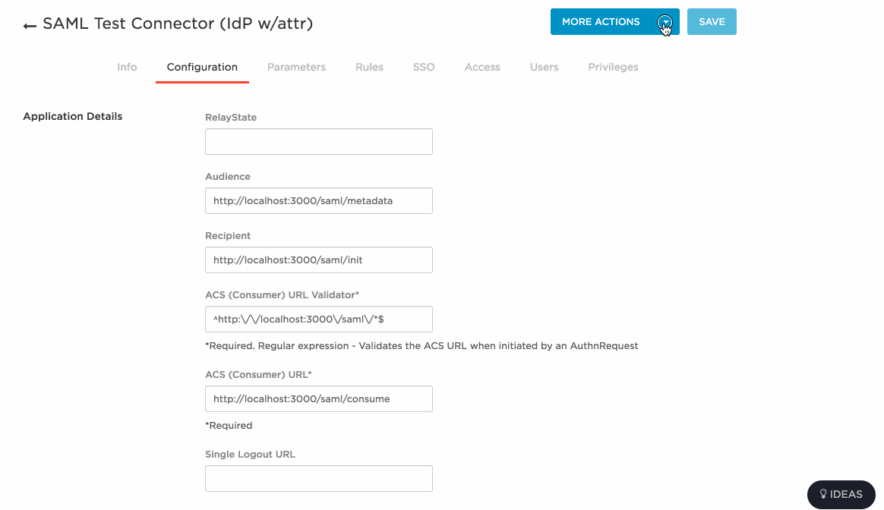 OneLogin metadata URL
Workato Single Sign-on setup
- Enable SAML on Team -> Settings page
- Enter Team ID - handle to identify team during login (no whitespace or special characters, just letters, numbers and dash)
- Set SAML provider
- Preferable way of SAML configuration is via metadata URL - get this URL from Identity Provider (see the instructions for Okta and OneLogin)
- Insert metadata URL and press "Validate Settings", once validation succeeds press "Save" 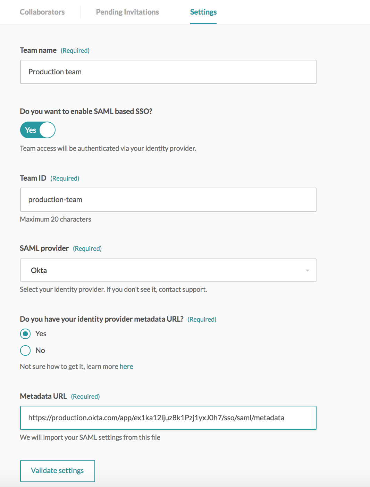 Workato SAML Okta Configuration example
Also SAML settings could be configured manually. In this case you need to get from SAML Identity Provider next information:
- Identity Provider Single Sign-On URL
- Identity Provider Issuer
- X.509 Certificate 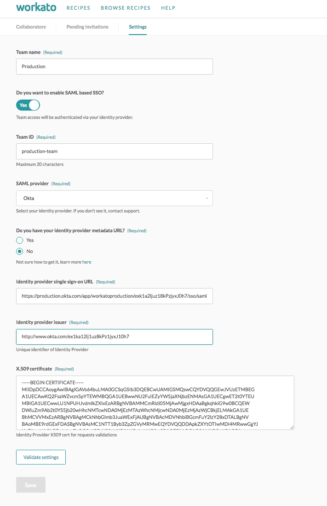 Workato SAML Okta Manual Configuration example
Logging into SAML-enabled team
Once SAML is enabled, access to Team is controlled by SAML Identity Provider (Okta, OneLogin, etc). In order to switch from personal account to the SAML-enabled team you need to go through SAML Identity Provider authentication procedure. 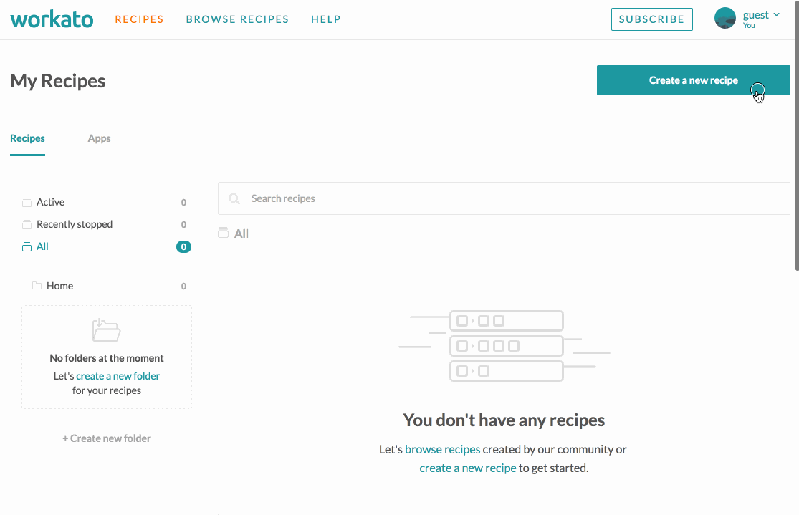 Switch to Team account with Okta authorization
Another way to login directly into SAML-enabled team is by providing a Team ID set during Team SAML configuration procedure. SAML Identity Provider authentication step is required as well. 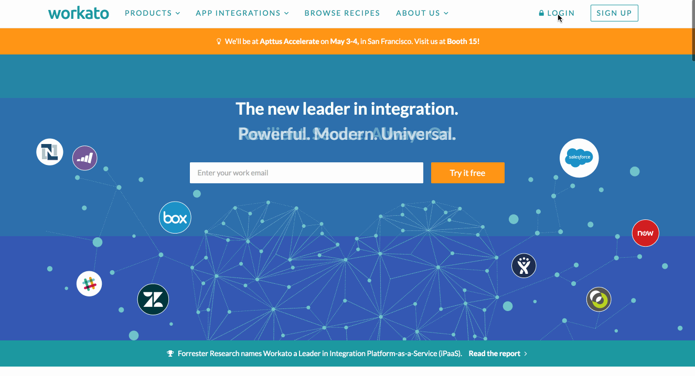 Login into Team account with Team Id and Okta authentication
SAML Just-In-Time provisioning
Just-in-Time provisioning eliminates the needs for team admins to create Workato user accounts in advance on behalf of team members. When an employee signs up for a new Workato account via SAML SSO, they will automatically be added into the organization's team. When an employee with an existing Workato account logs in via SAML SSO for the first time, they will automatically be added into the organization's team as well. Team members will be given the role of Operator by default.
Information about the new user is taken from the SAML attributes passed to Workato from the identity provider. If attributes are missing, default value are used. The following attributes are supported:
| Workato user field | SAML attribute | Default value |
|---|---|---|
| User email | workato_email |
SAML NameID(in email format) |
| User first and last name | workato_full_name |
part of SAML Name |
| User team role | workato_role(could be Admin, Analyst or Operator, case-sensitive) |
Operator |
You may enable SAML Just-In-Time provisioning on Team > Settings page.
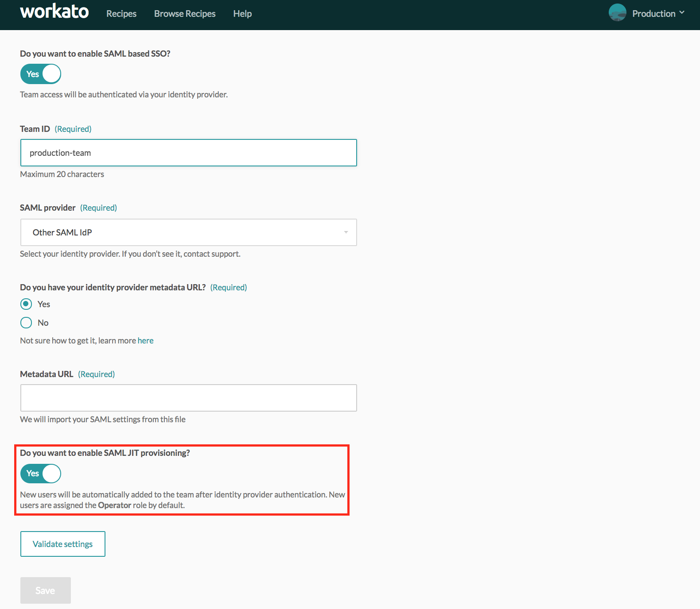 Enable SAML Just-In-Time provisioning